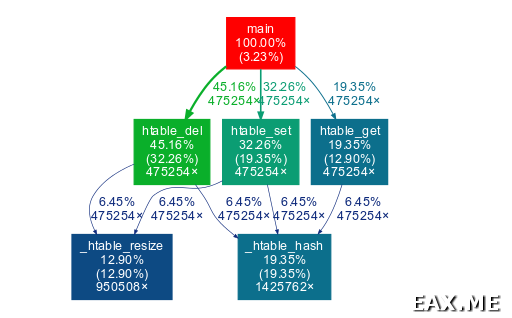
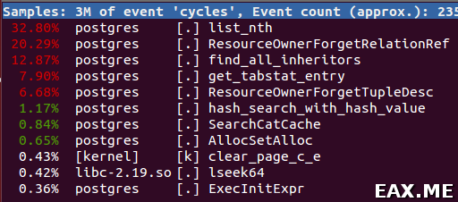
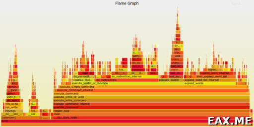

Рассмотрим типичную ситуацию — приходит пользователь и говорит «я делаю в приложении то-то и то-то и у меня все сильно тормозит». Как понять, в чем проблема, и исправить ее? Вот об этом мы и поговорим в данной заметке. Приведенный список методов не претендует на полноту, однако это то, что в настоящее время я чаще всего использую на практике. Несмотря на то, что пишу я сейчас в основном на C, описанные методы будут также применимы в проектах, использующих С++, и, возможно, другие языки программирования.
Начнем с самого примитивного, но, тем не менее, весьма популярного способа. Идея простая — замеряем время в начале выполнения операции, замеряем в конце, считаем дельту, выводим в лог. Вот так это примерно выглядит с использованием процедуры gettimeofday:
#include <sys/time.h>
/* ... */
struct timeval tv;
gettimeofday(&tv, NULL);
double time_begin = ((double)tv.tv_sec) * 1000 +
((double)tv.tv_usec) / 1000;
/* ... */
gettimeofday(&tv, NULL);
double time_end = ((double)tv.tv_sec) * 1000 +
((double)tv.tv_usec) / 1000 ;
double total_time_ms = time_end - time_begin;
printf("TOTAL TIME (ms) = %f\n", total_time_ms);
Примечание: См также кроссплатформенную реализацию процедуры getCurrentTimeMs из заметки Продолжаем изучение OpenGL: простой вывод текста.
Пропарсить полученный лог можно, к примеру, с использованием Perl:
cat test.log | perl -e '$max = 0; while(<STDIN>) { $_ =~ /TOTAL TIME'\
' \(ms\) = (.*?)\,/; if($1 > 1.5) { print "$_"; } $max = $1 if $1 > '\
'$max; } print "max = $max\n"; '
Несмотря на тупость метода, он очень удобен, например, когда в приложении что-то тормозит иногда, а не постоянно. При использовании метода нужно помнить, что системный вызов gettimeofday сам по себе сравнительно дорогой. Если использовать его, скажем, между захватом и освобождения спинлока, бутылочное горлышко, которое вы ищите, может уехать вообще в другое место. Также вы можете получать неправильные цифры, если между двумя замерами времени шедулер решит переключиться на выполнение другого процесса.
Программа strace показывает системные вызовы и их возвраты, что бывает довольно удобно при отладке. С флагом -c она показывает топ системных вызовов, их количество, и сколько времени было проведено в вызове:
$ strace -c pwd
/home/ubuntu
% time seconds usecs/call calls errors syscall
------ ----------- ----------- --------- --------- ----------------
31.73 0.000132 15 9 mmap
19.95 0.000083 28 3 3 access
11.30 0.000047 16 3 open
10.58 0.000044 22 2 munmap
8.17 0.000034 9 4 mprotect
4.57 0.000019 5 4 fstat
3.37 0.000014 3 5 close
2.88 0.000012 12 1 write
2.64 0.000011 4 3 brk
1.68 0.000007 7 1 execve
1.44 0.000006 6 1 read
0.96 0.000004 4 1 getcwd
0.72 0.000003 3 1 arch_prctl
------ ----------- ----------- --------- --------- ----------------
100.00 0.000416 38 3 total
Программа ltrace делает то же самое и для библиотечных вызовов:
$ ltrace -c pwd
/home/ubuntu
% time seconds usecs/call calls function
------ ----------- ----------- --------- --------------------
17.31 0.000636 636 1 setlocale
12.93 0.000475 118 4 __freading
9.71 0.000357 178 2 fclose
8.11 0.000298 298 1 puts
6.56 0.000241 120 2 fileno
5.69 0.000209 209 1 getenv
5.61 0.000206 103 2 fflush
5.52 0.000203 203 1 strrchr
5.36 0.000197 98 2 __fpending
5.25 0.000193 193 1 __cxa_atexit
4.24 0.000156 156 1 bindtextdomain
4.16 0.000153 153 1 textdomain
3.86 0.000142 142 1 getcwd
2.94 0.000108 108 1 getopt_long
2.75 0.000101 101 1 free
------ ----------- ----------- --------- --------------------
100.00 0.003675 22 total
Чтобы подключиться при помощи strace или ltrace к уже работающему процессу, используйте флаг -p.
Во FreeBSD утилита, аналогичная strace, называется truss. Кроме того, strace и ltrace доступны в портах.
Утилита gprof доступна как в Linux, так и во FreeBSD. Для примера попробуем прогнать ее на программе из заметки Реализация хэш-таблиц, почти как в Perl.
Если программа уже была собрана, делаем make clean. Затем пересобираем ее с флагом -pg:
gcc -pg -Wall htable.c htable_test.c -o htable_test
Запускаем программу без gprof:
cat test.txt | ./htable_test > /dev/null
Будет создан двоичный файл gmon.out. Этот шаг обязателен, иначе при попытке профайлинга увидим ошибку:
gmon.out: No such file or directory
Теперь запускаем программу под gprof:
cat test.txt | gprof ./htable_test > profile
При этом сама программа в stdout ничего выводить не будет. Полученный текстовый файл profile вполне читаемый — видно, где и сколько времени проводила программа. Так, к примеру, могут выглядеть первые несколько его строк:
Flat profile:
Each sample counts as 0.01 seconds.
% cumulative self self total
time seconds seconds calls ns/call ns/call name
30.37 0.10 0.10 475254 210.86 295.21 htable_del
18.22 0.16 0.06 1425762 42.17 42.17 _htable_hash
18.22 0.22 0.06 475254 126.52 210.86 htable_set
12.15 0.26 0.04 950508 42.17 42.17 _htable_resize
12.15 0.30 0.04 475254 84.34 126.52 htable_get
3.04 0.31 0.01 main
0.00 0.31 0.00 1 0.00 0.00 htable_free
0.00 0.31 0.00 1 0.00 0.00 htable_new
Также можно построить красивый граф вызовов:
sudo apt-get install graphviz
sudo pip install gprof2dot
gprof2dot ./profile | dot -Tsvg -o output.svg
Пример полученной картинки (кликабельно, SVG, ~ 9 Кб):

Подробности про утилиту dot и Graphviz см в заметке Рисуем красивые графы при помощи Graphviz.
Как ни странно, gdb можно использовать и для профайлинга. Просто говорим:
gdb --batch --command=gdb.script -p 12345
… где в gdb.script написано:
bt
Понятно, что таким образом можно собирать не только стэктрейсы, но и другую информацию, например, значения переменных, переданных аргументов, и так далее. Этот прием показал себя весьма полезным, например, при поиске и устранении lock contention. Если программа часто висит в ожидании лока, мы будем видеть это ожидание по стэктрейсам.
Установка perf в Ubuntu / Debian:
sudo apt-get install linux-tools-common
При первом запуске увидим что-то вроде:
$ perf top -u postgres
WARNING: perf not found for kernel 3.13.0-71
You may need to install the following packages for this
specific kernel:
linux-tools-3.13.0-71-generic
linux-cloud-tools-3.13.0-71-generic
You may also want to install one of the following packages to keep
up to date:
linux-tools-generic
linux-cloud-tools-generic
Ставим и эти пакеты тоже:
sudo apt-get install linux-tools-generic linux-cloud-tools-generic
Можно посмотреть top по всей системе:
sudo perf top -a
… по процессам конкретного пользователя:
sudo perf top -u postgres
… или конкретному процессу:
sudo perf top -p 12345
Вот как это примерно выглядит:

Картинка обновляется в реальном времени. При помощи стрелочек и клавиши Enter можно «проваливаться внутрь» процессов и функций, вплоть до подсвечивания строчек кода и ассемблерных инструкций, которые тормозят. Очень удобно!
Во FreeBSD, насколько я понимаю, аналогичный функционал предоставляется программой pmcstat. Однако на практике я ею пока не пользовался.
Помимо отображения топа самых часто вызываемых процедур программа perf умеет много чего еще.
Например, пишем stack samples с частотой 99 Герц для определенного pid’а со сборкой данных о call chains (флаг -g):
sudo perf record -p 12345 -F 99 -g
Запуск конкретной программы под perf производится так:
sudo perf record -F 99 -g -- ./myprog arg1 arg2 arg3
На выходе получаем файл perf.data.
Смотрим отчет:
sudo perf report --stdio
Но читать его в таком виде не очень-то удобно. Намного удобнее построить флеймграф:
git clone https://github.com/brendangregg/FlameGraph
sudo perf script | ./FlameGraph/stackcollapse-perf.pl > out.perf-folded
./FlameGraph/flamegraph.pl out.perf-folded > perf.svg
Получаем красивую картинку вроде такой:

В полученном SVG-файле можно кликать на названия процедур для увеличения соответствующего участка флеймграфа, а также искать процедуры по имени. Здесь и здесь можно найти больше информации и примеров. Еще этот набор скриптов умеет работать с dtrace и строить разные другие виды флеймграфов, но это уже тема для отдельной заметки.
Дополнение: Описание того, как строятся флеймграфы при помощи DTrace, вы найдете в заметке Использование DTrace на примере FreeBSD и Linux. Аналогичную инструкцию для SystemTap вы найдете в посте Установка и простые примеры использования SystemTap, а для bcc/eBPF — в статье Трассировка и профайлинг в Linux с помощью bcc/eBPF. Если же вас интересует профилирование памяти, читайте заметку Профилируем использование памяти в программах на C/C++ при помощи Heaptrack.
Как видите, недостатка в инструментах профайлинга в мире C/C++ не наблюдается. Не один из описанных приемов не является универсальным, но при правильном их комбинировании можно разобраться практически в любой проблеме.
{kind=link}